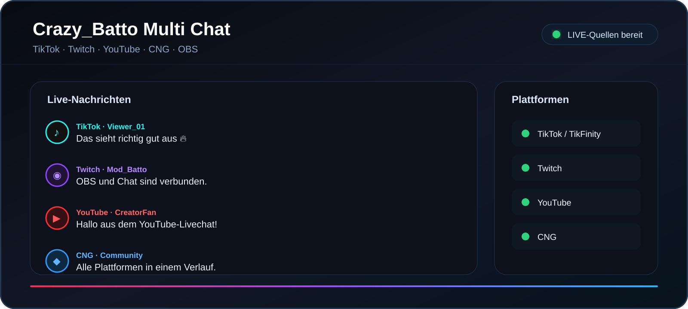

Crazy_Batto Multi Chat
BATTO OBS TOOL 2.1.0OBS, TikTok und Multi-Chat zentral steuern
Produktionskern für OBS, TikTok LIVE Studio/API, Multi-Chat, Touch-Deck und Browser-Overlays.
SCHNELLSTART
Direkt öffnen
STATUS
Getrennte Module
Ein Plattformfehler blockiert nicht den gesamten Programmstart. Verbindungen können getrennt eingerichtet und geprüft werden.
OBS WEBSOCKET 5
Nicht verbunden
OBS Studio verbinden
Lokale Verbindung über 127.0.0.1:4455. Das Passwort wird nur verschlüsselt gespeichert.
Verbindungsdaten
OBS-Status
Status der verbundenen OBS-Instanz.
- Status
- Nicht verbunden
Direktsteuerung
Aktionen sind nur aktiv, wenn OBS verbunden ist.
OBS-BROWSERQUELLE
Twitch-Hologramm
Namen, Chatfarben und Schriftart als Overlay gestalten.
OBS-BROWSERQUELLE
Stream- und Chat-Overlay
Chat und Live-Ereignisse als lokale Browserquelle in OBS. Dieser Bereich bleibt zusätzlich zu Multi-Chat und Hologramm erhalten.
Overlay-Status wird geladen …
OBS-Browserquelle
Wird geladen …02.08.2026 · CREATOR HUB · ELGATO
Plugin-System
Installierte Plugin-Manifeste und Icon-Packs werden aus den bekannten Creator-Hub-, Batto- und Stream-Deck-Verzeichnissen geladen.
Plugins werden geladen …
WLAN · LAN · USB-TETHERING
Handy verbinden
Lokale Kopplung mit PIN und QR-Code. Keine Cloud-Verbindung erforderlich.
QR-Code
Noch keine AdressePIN
------Offene Kopplungsanfragen
Verbundene Handys
EINSTELLUNGEN
Produkt-Einstellungen
Die 2.1-Einstellungen werden geladen …
BATTO 3-IN-1 · LOKALER ASSISTENTZu deinen Diensten,
Zu deinen Diensten,
Sir Crazy.
Dein Stream, deine Messwerte, deine Stimme. Frage gezielt nach deinem PC oder wechsle deine OBS-Szene.
Jarvis
Sprachdienst schläft
Deine Szenen per Sprache
OBS zuerst verbinden, dann vorhandene Szenen zuordnen. „Jarvis Pause“ aktiviert deine Pause-Szene.
Lokales Gedächtnis
Allgemeine Fragen mit lokalem KI-Modell
Optional: benötigt ein installiertes Ollama-Modell. Das Modell wird nur für allgemeine Fragen geladen und anschließend freigegeben. Messwerte und OBS-Befehle funktionieren ohne KI-Modell. Keine selbstständigen Codeänderungen oder Downloads.
Stimme & Mikrofon
Sprachpaket
Mitgeliefertes Sprachpaket
Deutsche, lokal erzeugte Stimme. Keine Kamera, keine Fingerverfolgung. Dauerhaftes Zuhören kannst du jederzeit abschalten.
Chat vorlesen
Plattformen im Multi-Chat verbinden. Fehlt eine bestätigte Moderatorrolle, wird die Nachricht im Moderator-Modus übersprungen. Vorgelesener Chat löst keine Befehle aus.
Stream Deck
Messwerte und Lüfter auf einzelnen Tasten anzeigen, Jarvis-Befehle ausführen und Kurvenentwürfe auswählen.
Messwerte werden geladen
Jeder von deiner Hardware und den Messquellen bereitgestellte Wert ist einzeln einstellbar. GPU-Pin-Strom (A) und Pin-Spannung (V) erscheinen nur, wenn die Quelle sie tatsächlich liefert.
Messwert auswählen
Alle Zahlen gelten in der Einheit dieses Sensors. Der Rücksetzabstand verhindert wiederholte Meldungen direkt am Grenzwert. Für fehlende oder veraltete Werte gibt es keine Wertansage.
Messquellen
NVIDIA und Windows werden automatisch gelesen. Für weitere Sensoren HWiNFO-Sensorfreigabe aktivieren oder ein laufendes CSV-Protokoll aus iCUE, GPU Tweak oder HWiNFO auswählen. Die Datei muss regelmäßig neue Zeilen erhalten. Andere Programme behalten die Hardware-Steuerung.
1920 × 1080 · Lüfter anklicken und frei verschieben. In OBS als Browserquelle einfügen. Die Zahl in der Mitte stammt aus dem zugeordneten Temperatursensor.
Lüfterkurven
Kurven sind bearbeitbare Entwürfe. Die tatsächliche Steuerung und der Wechsel aktiver Kühlprofile bleiben in iCUE. Auf dem Stream Deck dafür die offizielle iCUE-Kühlungsaktion verwenden.
Kurve bearbeiten
Temperatur (°C)Lüfterleistung (%)
Zuordnungen aus deinem iCUE-Profil
Ein importiertes Profil zeigt gespeicherte Zuordnungen. Sie bestätigen keine aktuell angeschlossenen Geräte und keine laufende Hardwarekurve.